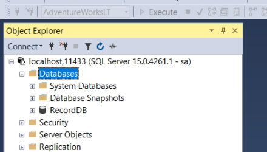

Source code: Projects\docker-recorddb-mssql.
docker run -e "ACCEPT_EULA=Y" -e "MSSQL_SA_PASSWORD=Pwd12345!" -p 11433:1433 -d mcr.microsoft.com/mssql/server:2019-latest
Note: every time you run this image you have to add the EULA statement or it doesn't work.
This installs the latest version of the image that we can use.
docker build -t record-db .
docker run -p 11433:1433 -d record-db
We have to give the image a port value. SQL Server is installed on my system and uses the port number 1433 so we can't use that. In our case we will use port 11433 instead. 11433 is the port we use to connect and 1433 is the port inside the container.
Once this is up and running we can open up SQL Server Management Studio (SSMS) and use the following to log in.
Server: localhost, 11433
Username: sa
Password: Pwd12345!
Note: localhost uses a comma in this situation.
Once you have logged in you will see your SQL server.

Note: you can create a database but each time you shut the container you will lose your changes because the image is read-only.
We will make a new image from the original SQL Server image that contains a database. We can use this to test and send out a database to other users in our team for testing.
In my docker folder I have 3 files.
FROM mcr.microsoft.com/mssql/server:2019-latest AS build
ENV MSSQL_PID=Developer
ENV ACCEPT_EULA=Y
ENV SA_PASSWORD=Pwd12345!
WORKDIR /tmp
COPY RecordDB_BU.BAK .
COPY restore-backup.sql .
RUN /opt/mssql/bin/sqlservr --accept-eula & sleep 30 \
&& /opt/mssql-tools/bin/sqlcmd -S localhost -U SA -P "Pwd12345!" -i /tmp/restore-backup.sql \
&& pkill sqlservr
FROM mcr.microsoft.com/mssql/server:2019-latest AS release
ENV ACCEPT_EULA=Y
COPY --from=build /var/opt/mssql/data /var/opt/mssql/data
FROM is the image we will be using.
We have to add some ENV variables to for the image including the sa password.
WORKDIR is the current working directory that stores the file we require.
/opt/mssql/bin/sqlservr is where you run SQL server in the Linux image.
Note: SQL Server here is spelled sqlservr using 8 characters for Linux.
/opt/mssql-tools/bin/ is where we run a SQL script (restore-backup.sql) that restores a database backup.
We are going to download the build image and run the script to install The RecordDB database in the release image.
This is the backup file that we will restore using the following script.
RESTORE DATABASE [RecordDB] FROM DISK = '/tmp/RecordDB_BU.BAK'
WITH FILE = 1,
MOVE 'RecordDB' TO '/var/opt/mssql/data/RecordDB.mdf',
MOVE 'RecordDB_log' TO '/var/opt/mssql/data/RecordDB.ldf',
NOUNLOAD, REPLACE, STATS = 5
GO
Note: every time you update this database you can delete the current release image and create a new image.
The database and log file are stored in the Linux image, in /var/opt/mssql/data/.
docker build -t record-db .
docker run -p 11433:1433 -d record-db
Log in to your SQL Server connection again and this time you will see your database.

Now you have a totally new image and you don't have to accept the EULA or add a password.
This database is used for testing purposes and any changes will be saved only in the container (not the image).
In my case I connected the database to my RecordDB website and I could test the database in the Docker container.
Just imagine that you are sending this image to other members of your team and it contains sensitive data like emails, phone numbers, password hashes, etc.
We can run a sanitising script in our dockerfile.
To show an example of this we will create an image of the AdventureWorksLT database.
RESTORE DATABASE [AdventureWorksLT] FROM DISK = '/tmp/AdventureWorksLT2019.bak'
WITH FILE = 1,
MOVE 'AdventureWorksLT2012_Data' TO '/var/opt/mssql/data/AdventureWorksLT.mdf',
MOVE 'AdventureWorksLT2012_log' TO '/var/opt/mssql/data/AdventureWorksLT.ldf',
NOUNLOAD, REPLACE, STATS = 5
GO
USE AdventureWorksLT;
GO
UPDATE SalesLT.Customer
SET EmailAddress = FirstName + '@alanrobson.co',
LastName = 'Customer',
Phone = FORMAT(CAST(LEFT(CAST(ABS(CAST(CAST(NEWID() AS BINARY(10)) AS INT)) AS VARCHAR(MAX)) + '0000000000', 10) AS BIGINT), '###-###-####'),
PasswordHash = '',
PasswordSalt = '';
Note that we are still restoring our database the same as our previous example. We add the USE statement after the restore and the rest of the code is our UPDATE script to update the Customer table.
FROM mcr.microsoft.com/mssql/server:2019-latest AS build
ENV MSSQL_PID=Developer
ENV ACCEPT_EULA=Y
ENV SA_PASSWORD=Pwd12345!
WORKDIR /tmp
COPY AdventureWorksLT2019.bak .
COPY sanitise-backup.sql .
RUN /opt/mssql/bin/sqlservr --accept-eula & sleep 10 \
&& /opt/mssql-tools/bin/sqlcmd -S localhost -U SA -P "Pwd12345!" -i /tmp/sanitise-backup.sql \
&& pkill sqlservr
FROM mcr.microsoft.com/mssql/server:2019-latest AS release
ENV ACCEPT_EULA=Y
COPY --from=build /var/opt/mssql/data /var/opt/mssql/data
I have created a new folder with these files and the AdventureWorksLT2019.bak database backup.
Note: before you run this make sure you don't have the RecordDB image running because the port numbers will conflict.
docker build -t adventureworks .
docker run -p 11433:1433 -d adventureworks
In SQL Server open the Customer table. The following image shows the fields that have been sanitised.

You can remove unnamed images. These are temporary images and can be removed.
docker system prune -f
You can enter the running container with the following Docker command.
docker exec -it record-db-mssql-record-db-1 "bash"
Databases are stored in.
/var/opt/mssql/data
I can run queries in the container with.
/opt/mssql-tools/bin/sqlcmd -S localhost -U SA -P Pwd12345!
Query the database.
1> use recorddb;
2> go
Changed database context to 'RecordDB'.
1> select name from Artist;
2> go
name
--------------------------------------------------
William Ackerman
The Allman Brothers Band
Duane Allman
Greg Allman
Amazing Rhythm Aces
Tori Amos
...
I occasionally update my database and need to rebuild the image. This can be done by running the Docker Compose file.
When I did this I found that the data in the running container was still showing the old version of the database.
I found that when you run Docker Compose it will rebuild the image but because the data is stored in the volume I built in the Compose file it will use that data and not the new version of the database.
To get around that you can delete the volume for the Compose file.
Run.
docker ps
Will return the running containers and from here you can get the name of the container you are interested in.
record-db-mssql-sc-recorddb-1
Now run this command list the contents of the container.
dc inspect record-db-mssql-sc-recorddb-1
We are interested in the Mounts section.
"Mounts": [
{
"Type": "volume",
"Name": "record-db-mssql-sc_recorddb-data",
"Source": "/var/lib/docker/volumes/record-db-mssql-sc_recorddb-data/_data",
"Destination": "/var/opt/mssql",
"Driver": "local",
"Mode": "z",
"RW": true,
"Propagation": ""
}
Our volume name is.
record-db-mssql-sc_recorddb-data
docker volume ls
Will list all volumes.
DRIVER VOLUME NAME
local docker-python-flask_db-data
local kineteco_kineteco
local mongodb-demo-app-master_mongo-data
local mongodb-learning_mongo-data
local mysql-recorddb_mysql-recorddb
local postgres-docker_postgres_data
local record-db-mssql-sc_recorddb-data
local record-db-mssql_recorddb-data
local record-db-mssql_sql_data
local recorddb-test_sql_data
local recordefcore-db-mssql-mc_msql_data
local vehicleservice_mongo-data
The volume we need to delete is record-db-mssql-sc_recorddb-data.
docker volume rm record-db-mssql-sc_recorddb-data
Delete any containers that are used by our current image.
Delete the image (or images) that are used by our Docker Compose file.
Now we are at the stage where we can rebuild the image and we can do this by using.
docker compose up
In our Compose file we are building the image if there isn't one. Once this is up and running you should see you new database.